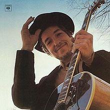

Nashville Skyline

Released: April 9, 1969
Length: 27:14
Producer: Bob Johnston
Label: Columbia
Side 1
Girl from the North Country
Nashville Skyline Rag (Instrumental)
To Be Alone with You
I Threw It All Away
Peggy Day
Side 2
Lay Lady Lay
One More Night
Tell Me That It Isn't True
Country Pie
Tonight I'll Be Staying Here with You
Home